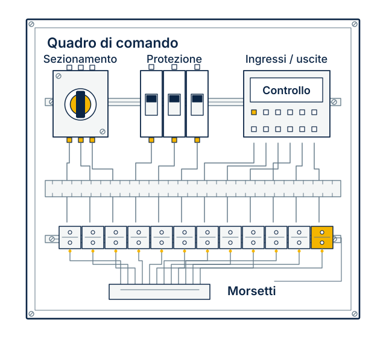
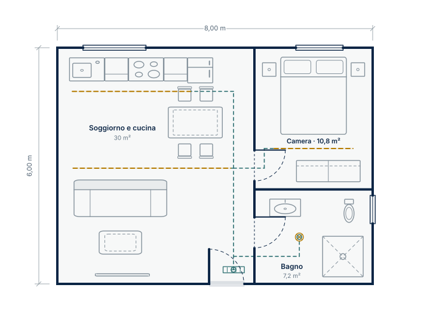

Quadri elettrici.
Automazione.
Domotica.
Realizziamo e cabliamo quadri per impianti e macchine. Con House Studio progetti la casa in virtuale; House Core collega il progetto all’impianto reale, con hardware da valutare insieme.
Dallo schema elettrico alla fornitura, definiamo insieme componenti, lavorazioni e documenti necessari.

Schema illustrativo, non una configurazione di fornitura.
Quadri elettrici
e cablaggio.
Un nuovo quadro, il cablaggio di una macchina o un intervento sull’esistente. Parti dal servizio che corrisponde al tuo progetto.
Quadri elettrici
Assemblaggio e cablaggio di quadri di distribuzione, comando e ausiliari, a partire dallo schema e dalla distinta componenti.
Bordo macchina
Quadri e collegamenti per macchine e impianti: alimentazioni, controllo, sensori, attuatori e morsettiere.
Collaudo e modifiche
Verifiche, ampliamenti e aggiornamenti di quadri esistenti, con documentazione delle attività concordate.
House Core per
la casa domotica.
House Core è il sistema operativo locale della casa: mette in relazione stanze, dispositivi e circuiti elettrici. Si comincia con House Studio, l’applicazione gratuita per progettare una casa virtuale su Windows e macOS. Disegna ambienti, arredi e percorsi, prova le luci ed esporta i livelli in PDF per il confronto tecnico.
Hardware e installazione si valutano separatamente, su preventivo.

Come nasce una fornitura.
Il preventivo definisce il lavoro prima della realizzazione: componenti, lavorazioni, verifiche e documenti.
- 01
Il tuo progetto
Raccogliamo schemi, distinta, capitolato e indicazioni sull’utilizzo.
- 02
La proposta
Concordiamo la fornitura, le eventuali integrazioni e i tempi previsti.
- 03
La realizzazione
Montaggio, cablaggio e identificazione secondo il progetto concordato.
- 04
Le verifiche
Eseguiamo i controlli e prepariamo i documenti previsti nell’offerta.
Hai un progetto
da realizzare?
Descrivi l’impianto e il lavoro richiesto. Puoi partire anche dai soli documenti già disponibili.
- Schema elettrico o descrizione delle funzioni
- Distinta componenti o capitolato, se disponibili
- Luogo dell’intervento e tempi desiderati
Guide agli impianti e alla domotica.
Dalle strisce LED a soffitto ai quadri elettrici della casa domotica: esplora geometrie, carichi, protezioni e materiali attraverso un progetto dimostrativo.
Leggi gli articoli LostarIl progetto,
prima della fornitura.
A chi si rivolge Lostar?
A progettisti, installatori, costruttori di macchine e committenti che devono realizzare o modificare un impianto. La richiesta può riguardare un quadro elettrico, il cablaggio bordo macchina o l’hardware per una casa domotica. Definiamo attività, componenti e documentazione a partire dalle esigenze del progetto.
Come preparo un preventivo per quadri elettrici?
Raccogli schema elettrico, distinta componenti e capitolato, se disponibili. Indica utenze, ingombri, ambiente di installazione e lavoro richiesto. Se parti da una descrizione delle funzioni, individuiamo le informazioni ancora necessarie per definire la fornitura. La pagina contatti ti aiuta a preparare il testo della richiesta.
Come funziona il percorso gratuito per la casa domotica?
Con House Studio prepari un progetto virtuale, organizzi gli impianti sulla pianta e scarichi i PDF dei livelli selezionati. I documenti permettono di discutere percorsi e quantità prima dell’acquisto. Hardware, configurazione dei dispositivi reali ed eventuale installazione si valutano separatamente. I PDF richiedono il completamento tecnico necessario per eseguire i lavori.
Posso proporre un progetto in Piemonte o nel Nord Italia?
Indica il comune dell’intervento, per esempio Torino, la fase del progetto e le attività richieste. La località aiuta a valutare fornitura, eventuali lavorazioni sul posto e coordinamento con il tuo installatore. Disponibilità e tempi sono definiti nella proposta.